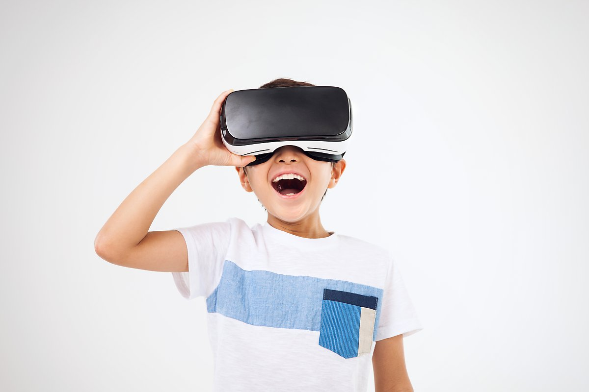

일반 대중에게 가장 널리 알려진 VR(가상현실) 기술은 주로 HMD(Head Mounted Display) 디바이스를
착용한 사용자에게 몰입형 환경을 제공하여 현실감을 극대화하게 되는데 사용자는 현실세계와 완전히
차단된 가상의 공간을 시청각적으로 받아들이게 되는 것입니다. VR의 가장 큰 특징은 360도 카메라로
찍은 사진이나 동영상, 그래픽의 세계를 경험할 수 있는 것입니다.
HMD(Head Mounted Display)
VR 체험을 위해 사용자가 머리에 장착하는 디스플레이 디바이스로, 외부와 차단한 후 사용자의 시각에
가상세계를 보여주는 역할을 한다. 눈앞에 디스플레이가 오도록 얼굴에 쓰는 형태로 마이크, 스테레오
피커를 비롯해 여러 센서 등이 탑재돼 있다. VR 헤드셋에 스마트폰을 탑재해 스마트폰 패널을 활용하는
기기는 다이브라고 부른다.
[네이버 지식백과] 가상현실(VR) (시사상식사전, pmg 지식엔진연구소)

모기장 현상
VR 기기 패널에 그물망처럼 격자가 보이는 현상으로, 마치 모기장처럼 보인다고 해서 모기장 현상이라고
부른다. 가상현실 헤드셋은 스마트폰 화면을 확대하는 방식을 사용하기 때문에 화면의 선명도가 떨어지는데,
이 때 픽셀 간의 간격이 눈에 보이는 모기장 현상이 발생한다.
[네이버 지식백과] 가상현실(VR) (시사상식사전, pmg 지식엔진연구소)
마그네틱 버튼
다이브에 부착하는 동그란 모양의 자석으로, 스마트폰에 탑재된 마그네틱 센서가 지자기장의 변화를 감지해
입력되는 방식이기 때문에 마그네틱 센서가 없는 스마트폰에서는 사용할 수 없다. 메뉴 선택 및 호출, 재생,
일시정지 등 간단한 조작이 가능하고 유튜브 애플리케이션 VR 모드, 카드보드 등 마그네틱 버튼을 지원하는
애플리케이션에서 사용할 수 있다.
[네이버 지식백과] 가상현실(VR) (시사상식사전, pmg 지식엔진연구소)
OTG 젠더
스마트폰과 마우스, 키보드, 조이패드 등을 연결하는 젠더로 다양한 외부기기를 연결해 VR을 즐길 수 있도록
도와준다. [네이버 지식백과] 가상현실(VR) (시사상식사전, pmg 지식엔진연구소)